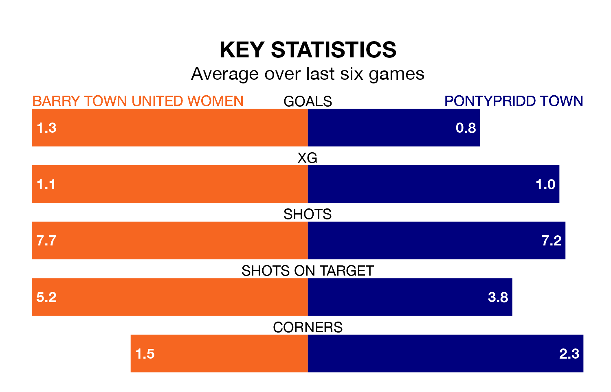

Struggling Barry Town United Women face Pontypridd Town on Sunday looking to build on a win in their last league outing.
After securing all three points with a 2-0 victory over Pontypridd Town on February 11, Barry Town United sit sixth in the Welsh Premier Women's League.
They travel to play a Pontypridd side eighth in the standings, who lost in their last match, 2-0 against Barry Town United Women.
In the last 10 years, Barry Town United and Pontypridd have played each other on 10 occasions. Barry Town United won five of them, Pontypridd three, and they drew twice.
On average, Barry Town United scored 1.9 goals and Pontypridd 1.5 in those matches.
Their last meeting was on February 11, when Barry Town United won 2-0 at home.
Barry Town United are in mixed form in the Welsh Premier Women's League, with three wins and three losses from their last six games.
With a win and a draw over that period, Pontypridd's form is worse – they have taken four points from 18, compared to the hosts' nine.
With nine goals in 14 games so far this season, Town are the league's lowest scorers with 0.6 goals per game. And they are conceding more than average, letting in 32 goals at a rate of 2.3 per game.
Barry Town United are also below average scorers, with 1.2 goals per game, compared to a league average of 1.8. They have conceded 2.5 goals per game.
Updated: 09:34 (UTC), 08/03/24